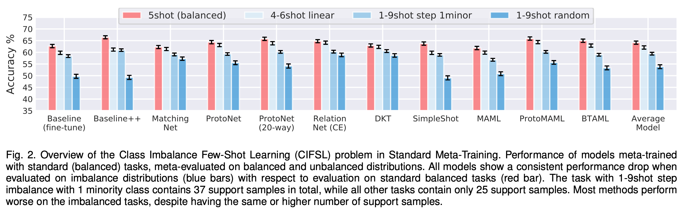
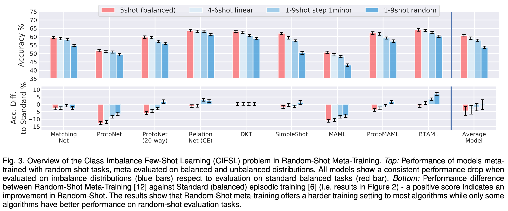
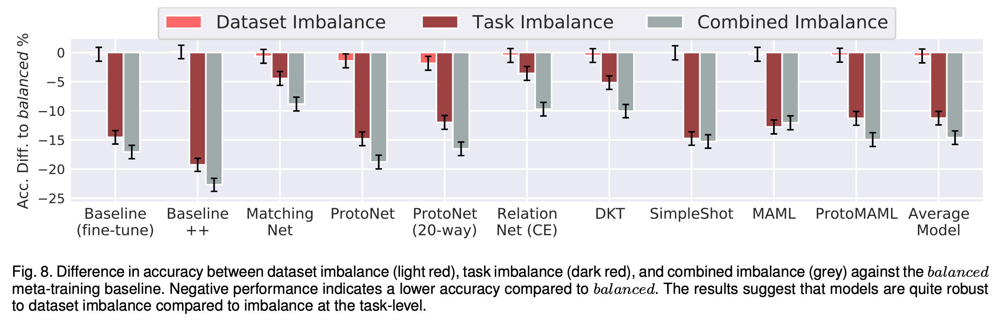
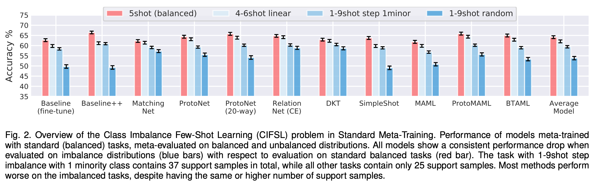
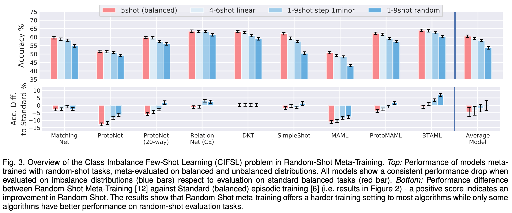
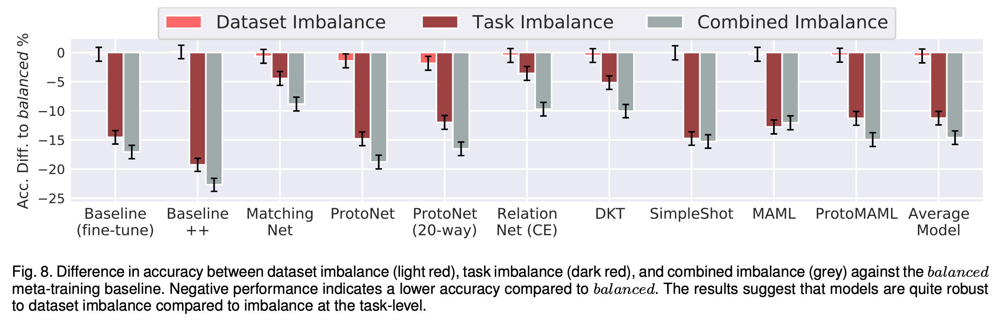

Few-Shot Learning with Class Imbalance
The standard benchmarking procedures of Few-Shot Learning (FSL) methods overlook the class imbalance problem commonly occurring in the real-world. While it is generally understood that class imbalance harms the performance of supervised methods, limited research examines the impact of imbalance on the FSL evaluation task.
Our analysis compares 10 state-of-the-art meta-learning and FSL methods on different imbalance distributions and rebalancing techniques. Our results reveal that:
- Some FSL methods (e.g. DKT, Matching Net, Relation Net) display a natural disposition against imbalance while most other approaches produce a performance drop by up to 15% compared to the balanced task without the appropriate mitigation.
- Contrary to popular belief, many meta-learning algorithms will not automatically learn to balance from exposure to imbalanced training tasks.
- Classical rebalancing strategies, such as random oversampling, can still be very effective, leading to state-of-the-art performances and should not be overlooked.
- FSL methods are more robust against meta-dataset imbalance than imbalance at the task-level with a similar imbalance ratio ($\rho<20$), with the effect holding even in long-tail datasets under a larger imbalance ($\rho=65$).
 





Sources
Ochal, Mateusz, Massimiliano Patacchiola, Amos Storkey, Jose Vazquez, and Sen Wang.
"How Sensitive are Meta-Learners to Dataset Imbalance?"
ICLR Workshop on Learning to Learn. 2021.
Ochal, Mateusz, Massimiliano Patacchiola, Amos Storkey, Jose Vazquez, and Sen Wang.
"Few-Shot Learning with Class Imbalance."
arXiv preprint arXiv:2101.02523. 2021.